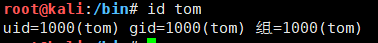
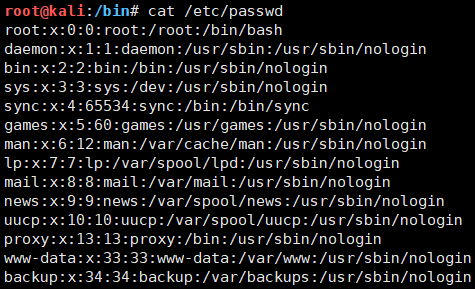
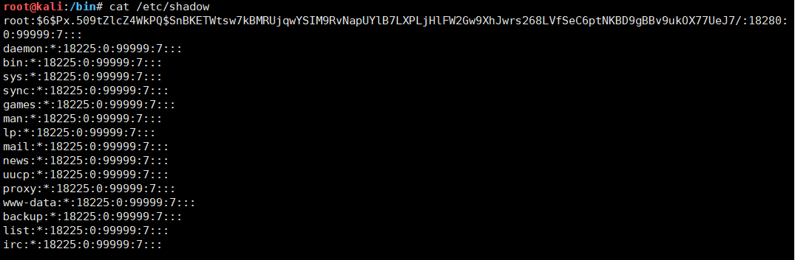
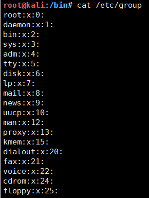

一切皆文件…
Linux目录介绍
- /bin: 存放经常使用的命令，例如：cd、chmod、chown等等
- /boot: 存放Linux启动的一些核心文件，包括一些连接文件以及镜像文件。
- /dev: 存放Linux的外部设备，类似于Windows下的设备管理器，Linux将设备作为文件进行管理
- /etc: 系统配置文件这个目录用来存放所有的系统管理所需的配置文件和子目录
- /home: 用户主目录，每个用户都有一个属于自己的主目录
- /lib: 存放动态链接库，几乎所有应用程序都需要用到这些共享库。类似于Windows下的DLL文件
- /lost+found: 一般情况为空，当硬盘系统发生错误后会将一些遗失文件放置在该目录下。当新挂载一个磁盘就会出现该目录。
- /media: 会将一些媒体设备挂载到该目录下，例如U盘、光驱。
- /mnt: 挂载目录，可以挂载临时文件系统。
- /opt: 额外软件安装目录。
- /usr/local: 是另一个给主机额外安装软件的目录，一般是通过编译方式安装的程序存放到该目录下。
- /proc: 内存虚拟目录，是系统内存的映射。
- /root: root用户主目录
- /sbin: 存放系统管理员使用的系统管理程序
- /selinux: 这个目录是Redhat/CentOS所特有的目录，Selinux是一个安全机制，类似于windows的防火墙，但是这套机制比较复杂，这个目录就是存放selinux（安全子系统）相关的文件的。
- /srv: 该目录存放一些服务启动之后需要提取的数据。
- /sys: 这是linux2.6内核的一个很大的变化。该目录下安装了2.6内核中新出现的一个文件系统 sysfs。sysfs文件系统集成了下面3种文件系统的信息：针对进程信息的proc文件系统、针对设备的devfs文件系统以及针对伪终端的devpts文件系统。该文件系统是内核设备树的一个直观反映。当一个内核对象被创建的时候，对应的文件和目录也在内核对象子系统中被创建。
- /tmp: 存放系统临时文件
- /usr: 这是一个非常重要的目录，用户的很多应用程序和文件都放在这个目录下，类似于windows下的program files目录。
- /usr/bin: 系统用户使用的应用程序。
- /usr/sbin: 超级用户使用的比较高级的管理程序和系统守护程序。
- /usr/src: 内核源代码默认的放置目录。
- /var: 这个目录中存放着在不断扩充着的东西，通常放置经常被修改的目录放在这个目录下。包括各种日志文件。
- /run: 是一个临时文件系统，存储系统启动以来的信息。当系统重启时，这个目录下的文件应该被删掉或清除。如果你的系统上有 /var/run 目录，应该让它指向 run。
在 Linux 系统中，有几个目录是比较重要的，平时需要注意不要误删除或者随意更改内部文件。
/etc： 上边也提到了，这个是系统中的配置文件，如果你更改了该目录下的某个文件可能会导致系统不能启动。
/bin, /sbin, /usr/bin, /usr/sbin: 这是系统预设的执行文件的放置目录，比如ls就是在 /bin/ls 目录下的。
值得提出的是，/bin, /usr/bin 是给系统用户使用的指令（除root外的通用户），而 /sbin, /usr/sbin 则是给root使用的指令。
/var： 这是一个非常重要的目录，系统上跑了很多程序，那么每个程序都会有相应的日志产生，而这些日志就被记录到这个目录下，具体在 /var/log 目录下，另外mail的预设放置也是在这里。
Linux系统启动过程
如下5个阶段：
- 内核的引导
- 运行
init - 系统初始化
- 建立终端
- 用户登陆系统
内核引导
当计算机打开电源后，首先是BIOS开机自检，按照BIOS中设置的启动设备（通常是硬盘）来启动。
操作系统接管硬件以后，首先读入 /boot 目录下的内核文件。

运行 init
init 进程是系统所有进程的起点，你可以把它比拟成系统所有进程的老祖宗，没有这个进程，系统中任何进程都不会启动。
init 程序首先是需要读取配置文件 /etc/inittab。

运行级别
许多程序需要开机启动。它们在Windows叫做”服务”（service），在Linux就叫做”守护进程”（daemon）。
init进程的一大任务，就是去运行这些开机启动的程序。
但是，不同的场合需要启动不同的程序，比如用作服务器时，需要启动Apache，用作桌面就不需要。
Linux允许为不同的场合，分配不同的开机启动程序，这就叫做”运行级别”（runlevel）。也就是说，启动时根据”运行级别”，确定要运行哪些程序。

Linux系统有7个运行级别(runlevel)：
运行级别0：系统停机状态，系统默认运行级别不能设为0，否则不能正常启动
运行级别1：单用户工作状态，root权限，用于系统维护，禁止远程登陆
运行级别2：多用户状态(没有NFS)
运行级别3：完全的多用户状态(有NFS)，登陆后进入控制台命令行模式
运行级别4：系统未使用，保留
运行级别5：X11控制台，登陆后进入图形GUI模式
运行级别6：系统正常关闭并重启，默认运行级别不能设为6，否则不能正常启动系统初始化
在init的配置文件中有这么一行： si::sysinit:/etc/rc.d/rc.sysinit 它调用执行了/etc/rc.d/rc.sysinit，而rc.sysinit是一个bash shell的脚本，它主要是完成一些系统初始化的工作，rc.sysinit是每一个运行级别都要首先运行的重要脚本。
它主要完成的工作有：激活交换分区，检查磁盘，加载硬件模块以及其它一些需要优先执行任务。
l5:5:wait:/etc/rc.d/rc 5这一行表示以5为参数运行/etc/rc.d/rc，/etc/rc.d/rc是一个Shell脚本，它接受5作为参数，去执行/etc/rc.d/rc5.d/目录下的所有的rc启动脚本，/etc/rc.d/rc5.d/目录中的这些启动脚本实际上都是一些连接文件，而不是真正的rc启动脚本，真正的rc启动脚本实际上都是放在/etc/rc.d/init.d/目录下。
而这些rc启动脚本有着类似的用法，它们一般能接受 start、stop、restart、status等参数。
/etc/rc.d/rc5.d/ 中的rc启动脚本通常是K或S开头的连接文件，对于以 S 开头的启动脚本，将以start参数来运行。
而如果发现存在相应的脚本也存在K打头的连接，而且已经处于运行态了(以/var/lock/subsys/下的文件作为标志)，则将首先以stop为参数停止这些已经启动了的守护进程，然后再重新运行。
这样做是为了保证是当init改变运行级别时，所有相关的守护进程都将重启。
至于在每个运行级中将运行哪些守护进程，用户可以通过chkconfig或setup中的”System Services”来自行设定。

建立终端
rc执行完毕后，返回init。这时基本系统环境已经设置好了，各种守护进程也已经启动了。
init接下来会打开6个终端，以便用户登录系统。在inittab中的以下6行就是定义了6个终端：
1:2345:respawn:/sbin/mingetty tty1
2:2345:respawn:/sbin/mingetty tty2
3:2345:respawn:/sbin/mingetty tty3
4:2345:respawn:/sbin/mingetty tty4
5:2345:respawn:/sbin/mingetty tty5
6:2345:respawn:/sbin/mingetty tty6用户登录系统
一般来说，用户的登录方式有三种：
- 命令行登录
- ssh登录
- 图形界面登录

对于运行级别为5的图形方式用户来说，他们的登录是通过一个图形化的登录界面。登录成功后可以直接进入 KDE、Gnome 等窗口管理器。
而本文主要讲的还是文本方式登录的情况：当我们看到mingetty的登录界面时，我们就可以输入用户名和密码来登录系统了。
Linux 的账号验证程序是 login，login 会接收 mingetty 传来的用户名作为用户名参数。
然后 login 会对用户名进行分析：如果用户名不是 root，且存在 /etc/nologin 文件，login 将输出 nologin 文件的内容，然后退出。
这通常用来系统维护时防止非root用户登录。只有/etc/securetty中登记了的终端才允许 root 用户登录，如果不存在这个文件，则 root 用户可以在任何终端上登录。
/etc/usertty 文件用于对用户作出附加访问限制，如果不存在这个文件，则没有其他限制。
图形模式与文字模式的切换方式
Linux预设提供了六个命令窗口终端机让我们来登录。
默认我们登录的就是第一个窗口，也就是tty1，这个六个窗口分别为tty1,tty2 … tty6，你可以按下Ctrl + Alt + F1 ~ F6 来切换它们。
如果你安装了图形界面，默认情况下是进入图形界面的，此时你就可以按Ctrl + Alt + F1 ~ F6来进入其中一个命令窗口界面。
当你进入命令窗口界面后再返回图形界面只要按下Ctrl + Alt + F7 就回来了。
如果你用的vmware 虚拟机，命令窗口切换的快捷键为 Alt + Space + F1~F6. 如果你在图形界面下请按Alt + Shift + Ctrl + F1~F6 切换至命令窗口。

Linux关机
在linux领域内大多用在服务器上，很少遇到关机的操作。毕竟服务器上跑一个服务是永无止境的，除非特殊情况下，不得已才会关机。
正确的关机流程为：sync > shutdown > reboot > halt
关机指令为：shutdown ，你可以man shutdown 来看一下帮助文档。
例如你可以运行如下命令关机：
sync 将数据由内存同步到硬盘中。
shutdown 关机指令，你可以man shutdown 来看一下帮助文档。例如你可以运行如下命令关机：
shutdown –h 10 ‘This server will shutdown after 10 mins’ 这个命令告诉大家，计算机将在10分钟后关机，并且会显示在登陆用户的当前屏幕中。
shutdown –h now 立马关机
shutdown –h 20:25 系统会在今天20:25关机
shutdown –h +10 十分钟后关机
shutdown –r now 系统立马重启
shutdown –r +10 系统十分钟后重启
reboot 就是重启，等同于 shutdown –r now
halt 关闭系统，等同于shutdown –h now 和 poweroffVim编辑器的使用
Vim键位图：
命令模式
| 移动光标快捷方法 | |
|---|---|
| h 或 向左箭头键(←) | 光标向左移动一个字符 |
| j 或 向下箭头键(↓) | 光标向下移动一个字符 |
| k 或 向上箭头键(↑) | 光标向上移动一个字符 |
| l 或 向右箭头键(→) | 光标向右移动一个字符 |
| [Ctrl] + [f] | 屏幕『向下』移动一页，相当于 [Page Down]按键 (常用) |
| [Ctrl] + [b] | 屏幕『向下』移动一页，相当于 [Page Down]按键(常用) |
| [Ctrl] + [d] | 屏幕『向下』移动半页 |
| [Ctrl] + [u] | 屏幕『向上』移动半页 |
| + | 光标移动到非空格符的下一行 |
| - | 光标移动到非空格符的上一行 |
| n<space> | 那个 n 表示『数字』，例如 20 。按下数字后再按空格键，光标会向右移动这一行的 n 个字符。例如 20 |
| 0 或功能键[Home] | 这是数字『 0 』：移动到这一行的最前面字符处 |
| $ 或功能键[End] | 移动到这一行的最后面字符处(常用) |
H |
光标移动到这个屏幕的最上方那一行的第一个字符 |
M |
光标移动到这个屏幕的中央那一行的第一个字符 |
L |
光标移动到这个屏幕的最下方那一行的第一个字符 |
G |
移动到这个档案的最后一行(常用) |
nG |
n 为数字。移动到这个档案的第 n 行。例如 20G 则会移动到这个档案的第 20 |
gg |
移动到这个档案的第一行，相当于 1G 啊！(常用) |
n<Enter> |
n 为数字。光标向下移动 n 行(常用) |
如果你将右手放在键盘上的话，你会发现 hjkl 是排列在一起的，因此可以使用这四个按钮来移动光标。 如果想要进行多次移动的话，例如向下移动 30 行，可以使用 30j 或 30↓ 的组合按键， 亦即加上想要进行的次数(数字)后，按下动作即可！
| 搜索替换 | |
|---|---|
/word |
向光标之下寻找一个名称为 word 的字符串。例如要在档案内搜寻 vbird 这个字符串，就输入 /vbird 即可！(常用) |
?word |
向光标之上寻找一个字符串名称为 word 的字符串。 |
n |
这个 n 是英文按键。代表重复前一个搜寻的动作。举例来说，如果刚刚我们执行 /vbird 去向下搜寻 vbird这个字符串，则按下 n 后，会向下继续搜寻下一个名称为 vbird 的字符串。如果是执行 ?vbird 的话，那么按下 n 则会向上继续搜寻名称为 vbird 的字符串！ |
N |
这个 N 是英文按键。与 n 刚好相反，为『反向』进行前一个搜寻动作。例如 /vbird 后，按下 N 则表示『向上』搜寻 vbird 。 |
:n1,n2s/word1/word2/g |
n1 与 n2 为数字。在第 n1 与 n2 行之间寻找 word1 这个字符串，并将该字符串取代为word2 ！举例来说，在 100 到 200 行之间搜寻 vbird 并取代为 VBIRD 则：『:100,200s/vbird/VBIRD/g』。(常用) |
:1,$s/word1/word2/g 或 :%s/word1/word2/g |
从第一行到最后一行寻找 word1 字符串，并将该字符串取代为 word2 ！(常用) |
:1,$s/word1/word2/gc 或 :%s/word1/word2/gc |
从第一行到最后一行寻找 word1 字符串，并将该字符串取代为word2 ！且在取代前显示提示字符给用户确认 (confirm)是否需要取代！(常用) |
| 删除、复制与粘贴 | |
|---|---|
| x, X | 在一行字当中，x 为向后删除一个字符 (相当于 [del] 按键)，X 为向前删除一个字符(相当于 [backspace] 亦即是退格键)(常用) |
| nx | n 为数字，连续向后删除 n 个字符。举例来说，我要连续删除 10 个字符，『10x』。 |
| dd | 删除游标所在的那一整行(常用) |
| ndd | n 为数字。删除光标所在的向下 n 行，例如 20dd 则是删除 20 行(常用) |
| d1k | 向上删除1行 |
| d1j | 向下删除1行 |
| d1h | 向左删除1个字符 |
| d1l | 向右删除1个字符 |
| dG | 删除光标所在到最后一行的所有数据 |
| d$ | 删除游标所在处，到该行的最后一个字符 |
| d0 | 那个是数字的 0 ，删除游标所在处，到该行的最前面一个字符 |
| yy | 复制游标所在的那一行(常用) |
| nyy | n 为数字。复制光标所在的向下 n 行，例如 20yy 则是复制 20 行(常用) |
| y1k | 向上复制1行 |
| y1j | 向下复制1行 |
| y1h | 向左复制1个字符 |
| y1l | 向右复制1个字符 |
| y1G | 复制游标所在行到第一行的所有数据 |
| yG | 复制游标所在行到最后一行的所有数据 |
| y0 | 复制光标所在的那个字符到该行行首的所有数据 |
| y$ | 复制光标所在的那个字符到该行行尾的所有数据 |
| p, P | p 为将已复制的数据在光标下一行贴上，P 则为贴在游标上一行 |
| J | 将光标所在行与下一行的数据结合成同一行 |
| c | 重复删除多个数据，例如向下删除 10 行，[ 10cj ] |
| u | 复原前一个动作。(常用)撤销 |
| [Ctrl]+r | 重做上一个动作。(常用)恢复撤销 |
| . | 不要怀疑！这就是小数点！意思是重复前一个动作的意思。如果你想要重复删除、重复贴上等等动作，按下小数点『.』就好了！(常用) |
输入模式
| 进入输入或取代的编辑模式 | |
|---|---|
| i,I | i 为『从目前光标所在处输入』， I 为『在目前所在行的第一个非空格符处开始输入』。 |
| a, A | a 为『从目前光标所在的下一个字符处开始输入』， A 为『从光标所在行的最后一个字符处开始输入』。(常用) |
| o, O | 这是英文字母 o 的大小写。o 为『在目前光标所在的下一行处输入新的一行』；O 为在目前光标所在处的上一行输入新的一行！(常用) |
| r, R | r只会取代光标所在的那一个字符一次；R会一直取代光标所在的文字，直到按下 ESC 为止；(常用) |
| [Esc] | 退出编辑模式，回到一般模式中(常用) |
底线命令模式
| 进入输入或取代的编辑模式 | |
|---|---|
| :w | 将编辑的数据写入硬盘档案中(常用) |
| :w! | 若文件属性为『只读』时，强制写入该档案。不过，到底能不能写入，还是跟你对该档案的档案权限有关啊！ |
| :q | 离开 vi (常用) |
| :q! | 若曾修改过档案，又不想储存，使用 ! 为强制离开不储存档案。 |
| :wq | 储存后离开，若为 :wq! 则为强制储存后离开(常用) |
| ZQ | 这是大写的 Z 喔！不存储档案离开！ |
| ZZ | 这是大写的 Z 喔！若档案没有更动，则不储存离开，若档案已经被更动过，则储存后离开！ |
| :w [filename] | 将编辑的数据储存成另一个档案（类似另存新档） |
| :r [filename] | 在编辑的数据中，读入另一个档案的数据。亦即将 『filename』这个档案内容加到游标所在行后面 |
| :n1,n2 w [filename] | 将 n1 到 n2 的内容储存成 filename 这个档案。 |
| :! command | 暂时离开 vi 到指令行模式下执行 command 的显示结果！例如『:! ls /home』即可在 vi 当中察看 /home 底下以 ls 输出的档案信息！ |
块选择模式
批量注释：Ctrl + v 进入块选择模式，然后移动光标选中你要注释的行，再按大写的 I 进入行首插入模式输入注释符号如 // 或 #，输入完毕之后，按两下 ESC，Vim 会自动将你选中的所有行首都加上注释，保存退出完成注释。
取消注释：Ctrl + v 进入块选择模式，选中你要删除的行首的注释符号，注意 // 要选中两个，选好之后按 d 即可删除注释，ESC 保存退出
用户管理
添加用户
1 | useradd [选项] 用户名 |
使用useradd时，如果后面不添加任何参数选项，
例如：#sudo useradd test创建出来的用户将是默认“三无”用户：一无Home Directory，二无密码，三无系统Shell。
因此利用这个用户登录系统，是登录不了的，为了避免这样的情况出现，可以用 （useradd -m +用户名）的方式创建，
它会在/home目录下创建同名文件夹，然后利用（ passwd + 用户名）为指定的用户名设置密码。
参数说明：
* 选项：
* -b, --base-dir BASE_DIR 新账户的主目录的基目录
* --btrfs-subvolume-home use BTRFS subvolume for home directory
* -c, --comment COMMENT 新账户的 GECOS 字段
* -d, --home-dir HOME_DIR 新账户的主目录
* -D, --defaults 显示或更改默认的 useradd 配置
* -e, --expiredate EXPIRE_DATE 新账户的过期日期
* -f, --inactive INACTIVE 新账户的密码不活动期
* -g, --gid GROUP 新账户主组的名称或 ID
* -G, --groups GROUPS 新账户的附加组列表
* -h, --help 显示此帮助信息并退出
* -k, --skel SKEL_DIR 使用此目录作为骨架目录
* -K, --key KEY=VALUE 不使用 /etc/login.defs 中的默认值
* -l, --no-log-init 不要将此用户添加到最近登录和登录失败数据库
* -m, --create-home 创建用户的主目录
* -M, --no-create-home 不创建用户的主目录
* -N, --no-user-group 不创建同名的组
* -o, --non-unique 允许使用重复的 UID 创建用户
* -p, --password PASSWORD 加密后的新账户密码
* -r, --system 创建一个系统账户
* -R, --root CHROOT_DIR chroot 到的目录
* -P, --prefix PREFIX_DIR prefix directory where are located the /etc/* files
* -s, --shell SHELL 新账户的登录 shell
* -u, --uid UID 新账户的用户 ID
* -U, --user-group 创建与用户同名的组
* -Z, --selinux-user SEUSER 为 SELinux 用户映射使用指定 SEUSER
* 用户名：
* 指定新账号的登录名实例：
1 |
|
Linux系统如何添加用户这个问题到网上问一下或者搜一下，很多人可能会说 useradd ，实际这是不对的。
useradd只会添加一个用户，没有创建它的主目录，除了添加一个新用户之外什么都没有。这个用户甚至不能登录，因为没有密码。
正确的做法是 adduser 用户名，这个命令实际是一个perl脚本，是 useradd 等类似底层命令的更友好的前端，
它会用交互性的方式建立新用户，使用它可以指定新用户的家目录，登录密码，是否加密主目录等等，它会：
- 建立一个新目录作为家目录
- 建立同名新组
- 把用户的主要组设为该组(除非命令选项覆盖以上默认动作，比如–disall-homdirecry之类)
- 从/etc/SKEL目录下拷贝文件到家目录，完成初始化
- 建立新用户的密码
- 如果其存在的话，还会执行一个脚本。
1 | # adduser [选项] [用户名] |
参数说明：
1 | 添加一个普通用户: |
删除账号
1 | userdel [选项] 用户名 |
参数说明：
* 选项：
* -f, --force 即使不属于此用户，也强制删除文件
* -h, --help 显示此帮助信息并退出
* -r, --remove 删除主目录和信件池
* -R, --root CHROOT_DIR chroot 到的目录
* -P, --prefix PREFIX_DIR prefix directory where are located the /etc/* files
* -Z, --selinux-user 为用户删除所有的 SELinux 用户映射实例：
1 | # userdel -r sam |
另一种删除用户方式：
1 | 删除普通用户 |
修改账号
1 | usermod [选项] 登录名 |
参数说明：
* 选项：
* -c, --comment COMMENT GECOS 字段的新值
* -d, --home HOME_DIR 用户的新主目录
* -e, --expiredate EXPIRE_DATE 设定帐户过期的日期为 EXPIRE_DATE
* -f, --inactive INACTIVE 过期 INACTIVE 天数后，设定密码为失效状态
* -g, --gid GROUP 强制使用 GROUP 为新主组
* -G, --groups GROUPS 新的附加组列表 GROUPS
* -a, --append GROUP 将用户追加至上边 -G 中提到的附加组中，并不从其它组中删除此用户
* -h, --help 显示此帮助信息并退出
* -l, --login NEW_LOGIN 新的登录名称
* -L, --lock 锁定用户帐号
* -m, --move-home 将家目录内容移至新位置 (仅于 -d 一起使用)
* -o, --non-unique 允许使用重复的(非唯一的) UID
* -p, --password PASSWORD 将加密过的密码 (PASSWORD) 设为新密码
* -R, --root CHROOT_DIR chroot 到的目录
* -P, --prefix PREFIX_DIR prefix directory where are located the /etc/* files
* -s, --shell SHELL 该用户帐号的新登录 shell
* -u, --uid UID 用户帐号的新 UID
* -U, --unlock 解锁用户帐号
* -v, --add-subuids FIRST-LAST 添加子 UID 范围
* -V, --del-subuids FIRST-LAST 移除子 UID 范围
* -w, --add-subgids FIRST-LAST 添加子 GID 范围
* -W, --del-subgids FIRST-LAST 移除子 GID 范围
* -Z, --selinux-user SEUSER 用户的新的 SELinux 用户映射修改账号参数与添加账号参数意义相同。
用户口令管理
1 | passwd [选项] [登录名] |
参数说明：
* 选项：
* -a, --all 报告所有帐户的密码状态
* -d, --delete 删除指定帐户的密码
* -e, --expire 强制使指定帐户的密码过期
* -h, --help 显示此帮助信息并退出
* -k, --keep-tokens 仅在过期后修改密码
* -i, --inactive INACTIVE 密码过期后设置密码不活动为 INACTIVE
* -l, --lock 锁定指定的帐户
* -n, --mindays MIN_DAYS 设置到下次修改密码所须等待的最短天数为 MIN_DAYS
* -q, --quiet 安静模式
* -r, --repository REPOSITORY 在 REPOSITORY 库中改变密码
* -R, --root CHROOT_DIR chroot 到的目录
* -S, --status 报告指定帐户密码的状态
* -u, --unlock 解锁被指定帐户
* -w, --warndays WARN_DAYS 设置过期警告天数为 WARN_DAYS
* -x, --maxdays MAX_DAYS 设置到下次修改密码所须等待的最多天数为 MAX_DAYS查询用户
1 | id [选项] [用户名] |
参数说明：
* 选项：
* -a ignore, for compatibility with other versions
* -Z, --context print only the security context of the process
* -g, --group print only the effective group ID
* -G, --groups print all group IDs
* -n, --name print a name instead of a number, for -ugG
* -r, --real print the real ID instead of the effective ID, with -ugG
* -u, --user print only the effective user ID
* -z, --zero delimit entries with NUL characters, not whitespace;not permitted in default format实例：

1 | ## 查询当前用户 |
切换用户
从高权限用户切换至低权限用户不需要输入密码。
返回原来用户使用 exit 即可。
1 | su [options] [-] [<user> [<argument>...]] |
参数说明：
* 选项：
* -m, -p, --preserve-environment do not reset environment variables
* -w, --whitelist-environment <list> don't reset specified variables
* -g, --group <group> specify the primary group
* -G, --supp-group <group> specify a supplemental group
* -, -l, --login make the shell a login shell
* -c, --command <command> pass a single command to the shell with -c
* --session-command <command> pass a single command to the shell with -c and do not create a new session
* -f, --fast pass -f to the shell (for csh or tcsh)
* -s, --shell <shell> run <shell> if /etc/shells allows it
* -P, --pty create a new pseudo-terminal
* -h, --help display this help
* -V, --version display version用户组管理
添加用户组
1 | groupadd [选项] 组名 |
参数说明：
* 选项:
* -f, --force 如果组已经存在则成功退出，并且如果 GID 已被使用则取消 -g
* -g, --gid GID 为新组使用 GID
* -h, --help 显示此帮助信息并退出
* -K, --key KEY=VALUE 不使用 /etc/login.defs 中的默认值
* -o, --non-unique 允许创建有重复 GID 的组
* -p, --password PASSWORD 为新组使用此加密过的密码
* -r, --system 创建一个系统账户
* -R, --root CHROOT_DIR chroot 到的目录
* -P, --prefix PREFIX_DIR directory prefix删除用户组
1 | groupdel [选项] 组名 |
参数说明：
选项:
-h, --help 显示此帮助信息并退出
-R, --root CHROOT_DIR chroot 到的目录
-P, --prefix PREFIX_DIR prefix directory where are located the /etc/* files
-f, --force 即便是用户的主组也继续删除修改用户组
1 | groupmod [选项] 组名 |
参数说明：
选项:
-g, --gid GID 将组 ID 改为 GID
-h, --help 显示此帮助信息并退出
-n, --new-name NEW_GROUP 改名为 NEW_GROUP
-o, --non-unique 允许使用重复的 GID
-p, --password PASSWORD 将密码更改为(加密过的) PASSWORD
-R, --root CHROOT_DIR chroot 到的目录
-P, --prefix PREFIX_DIR prefix directory where are located the /etc/* files切换用户组
newgrp 新用户组这条命令将当前用户切换到某用户组，前提条件是某用户组确实是该用户的主组或附加组。类似于用户账号的管理，用户组的管理也可以通过集成的系统管理工具来完成。
用户配置文件
用户文件
/etc/passwd 文件是用户管理工作涉及的最重要的一个文件。
例如：

/etc/passwd中一行记录对应着一个用户，每行记录又被冒号(:)分隔为7个字段，其格式和具体含义如下：
用户名:口令:用户标识号:组标识号:注释性描述:主目录:登录Shell- “用户名”是代表用户账号的字符串。
通常长度不超过8个字符，并且由大小写字母和/或数字组成。登录名中不能有冒号(:)，因为冒号在这里是分隔符。为了兼容起见，登录名中最好不要包含点字符(.)，并且不使用连字符(-)和加号(+)打头。
- “口令”一些系统中，存放着加密后的用户口令字。
虽然这个字段存放的只是用户口令的加密串，不是明文，但是由于/etc/passwd文件对所有用户都可读，所以这仍是一个安全隐患。因此，现在许多Linux 系统（如SVR4）都使用了shadow技术，把真正的加密后的用户口令字存放到/etc/shadow文件中，而在/etc/passwd文件的口令字段中只存放一个特殊的字符，例如“x”或者“*”。
- “用户标识号”是一个整数，系统内部用它来标识用户。
一般情况下它与用户名是一一对应的。如果几个用户名对应的用户标识号是一样的，系统内部将把它们视为同一个用户，但是它们可以有不同的口令、不同的主目录以及不同的登录Shell等。
通常用户标识号的取值范围是0～65 535。0是超级用户root的标识号，1～99由系统保留，作为管理账号，普通用户的标识号从100开始。在Linux系统中，这个界限是500。
- “组标识号”字段记录的是用户所属的用户组。
它对应着/etc/group文件中的一条记录。
- “注释性描述”字段记录着用户的一些个人情况。
例如用户的真实姓名、电话、地址等，这个字段并没有什么实际的用途。在不同的Linux 系统中，这个字段的格式并没有统一。在许多Linux系统中，这个字段存放的是一段任意的注释性描述文字，用做finger命令的输出。
- “主目录”，也就是用户的起始工作目录。
它是用户在登录到系统之后所处的目录。在大多数系统中，各用户的主目录都被组织在同一个特定的目录下，而用户主目录的名称就是该用户的登录名。各用户对自己的主目录有读、写、执行（搜索）权限，其他用户对此目录的访问权限则根据具体情况设置。
- 用户登录后，要启动一个进程，负责将用户的操作传给内核，这个进程是用户登录到系统后运行的命令解释器或某个特定的程序，即Shell。
Shell是用户与Linux系统之间的接口。Linux的Shell有许多种，每种都有不同的特点。常用的有sh(Bourne Shell), csh(C Shell), ksh(Korn Shell), tcsh(TENEX/TOPS-20 type C Shell), bash(Bourne Again Shell)等。
系统管理员可以根据系统情况和用户习惯为用户指定某个Shell。如果不指定Shell，那么系统使用sh为默认的登录Shell，即这个字段的值为/bin/sh。
用户的登录Shell也可以指定为某个特定的程序（此程序不是一个命令解释器）。
利用这一特点，我们可以限制用户只能运行指定的应用程序，在该应用程序运行结束后，用户就自动退出了系统。有些Linux 系统要求只有那些在系统中登记了的程序才能出现在这个字段中。
- 系统中有一类用户称为伪用户（pseudo users）
这些用户在/etc/passwd文件中也占有一条记录，但是不能登录，因为它们的登录Shell为空。它们的存在主要是方便系统管理，满足相应的系统进程对文件属主的要求。
常见的伪用户如下所示：
伪 用 户 含 义
bin 拥有可执行的用户命令文件
sys 拥有系统文件
adm 拥有帐户文件
uucp UUCP使用
lp lp或lpd子系统使用
nobody NFS使用除了上面列出的伪用户外，还有许多标准的伪用户，例如：audit, cron, mail, usenet等，它们也都各自为相关的进程和文件所需要。
密码文件
/etc/shadow 是密码文件，其中记录行与/etc/passwd中的一一对应，它由pwconv命令根据/etc/passwd中的数据自动产生。
如下图:

它的文件格式与/etc/passwd类似，由若干个字段组成，字段之间用”:”隔开。这些字段是：
登录名:加密口令:最后一次修改时间:最小时间间隔:最大时间间隔:警告时间:不活动时间:失效时间:标志- “登录名”是与/etc/passwd文件中的登录名相一致的用户账号
- “口令”字段存放的是加密后的用户口令字，长度为13个字符。如果为空，则对应用户没有口令，登录时不需要口令；如果含有不属于集合 { ./0-9A-Za-z }中的字符，则对应的用户不能登录。
- “最后一次修改时间”表示的是从某个时刻起，到用户最后一次修改口令时的天数。时间起点对不同的系统可能不一样。例如在SCO Linux 中，这个时间起点是1970年1月1日。
- “最小时间间隔”指的是两次修改口令之间所需的最小天数。
- “最大时间间隔”指的是口令保持有效的最大天数。
- “警告时间”字段表示的是从系统开始警告用户到用户密码正式失效之间的天数。
- “不活动时间”表示的是用户没有登录活动但账号仍能保持有效的最大天数。
- “失效时间”字段给出的是一个绝对的天数，如果使用了这个字段，那么就给出相应账号的生存期。期满后，该账号就不再是一个合法的账号，也就不能再用来登录了。
用户组文件
/etc/group 存放所有的用户组信息
如下图：

用户组的所有信息都存放在/etc/group文件中。此文件的格式也类似于/etc/passwd文件，由冒号(:)隔开若干个字段，这些字段有：
组名:口令:组标识号:组内用户列表- “组名”是用户组的名称，由字母或数字构成。与/etc/passwd中的登录名一样，组名不应重复。
- “口令”字段存放的是用户组加密后的口令字。一般Linux 系统的用户组都没有口令，即这个字段一般为空，或者是*。
- “组标识号”与用户标识号类似，也是一个整数，被系统内部用来标识组。
- “组内用户列表”是属于这个组的所有用户的列表/b]，不同用户之间用逗号(,)分隔。这个用户组可能是用户的主组，也可能是附加组。
批量添加用户
- 先编辑一个文本用户文件。
每一列按照/etc/passwd密码文件的格式书写，要注意每个用户的用户名、UID、宿主目录都不可以相同，其中密码栏可以留做空白或输入x号。一个范例文件user.txt内容如下:
user001::600:100:user:/home/user001:/bin/bash
user002::601:100:user:/home/user002:/bin/bash
user003::602:100:user:/home/user003:/bin/bash
user004::603:100:user:/home/user004:/bin/bash
user005::604:100:user:/home/user005:/bin/bash
user006::605:100:user:/home/user006:/bin/bash - 以root身份执行命令 /usr/sbin/newusers，从刚创建的用户文件user.txt中导入数据，创建用户：
1 | # newusers < user.txt |
然后可以执行命令 vipw 或 vi /etc/passwd 检查 /etc/passwd 文件是否已经出现这些用户的数据，并且用户的宿主目录是否已经创建。
- 执行命令/usr/sbin/pwunconv。
将 /etc/shadow 产生的 shadow 密码解码，然后回写到 /etc/passwd 中，并将/etc/shadow的shadow密码栏删掉。这是为了方便下一步的密码转换工作，即先取消 shadow password 功能。
# pwunconv- 编辑每个用户的密码对照文件。
格式为：
用户名:密码实例文件passwod.txt内容如下：
user001:123456
user002:123456
user003:123456
user004:123456
user005:123456
user006:123456- 以 root 身份执行命令 /usr/sbin/chpasswd。
创建用户密码，chpasswd 会将经过 /usr/bin/passwd 命令编码过的密码写入 /etc/passwd 的密码栏。
# chpasswd < passwd.txt- 确定密码经编码写入/etc/passwd的密码栏后。
执行命令 /usr/sbin/pwconv 将密码编码为 shadow password，并将结果写入 /etc/shadow。
# pwconv- 验证导入用户。